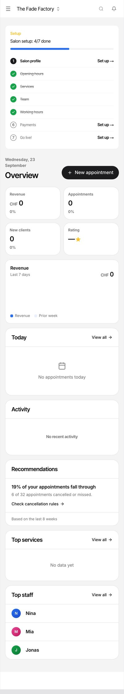
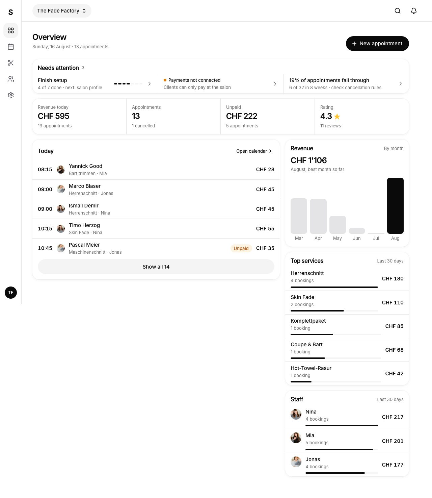
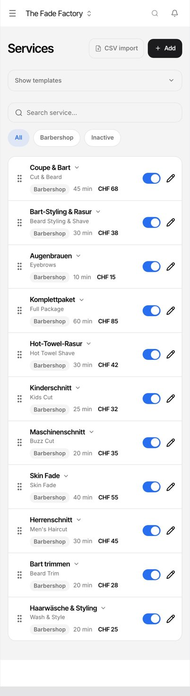
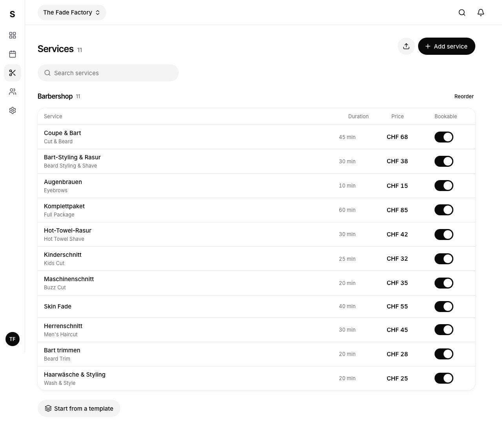
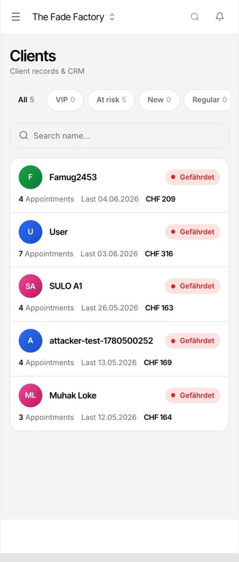
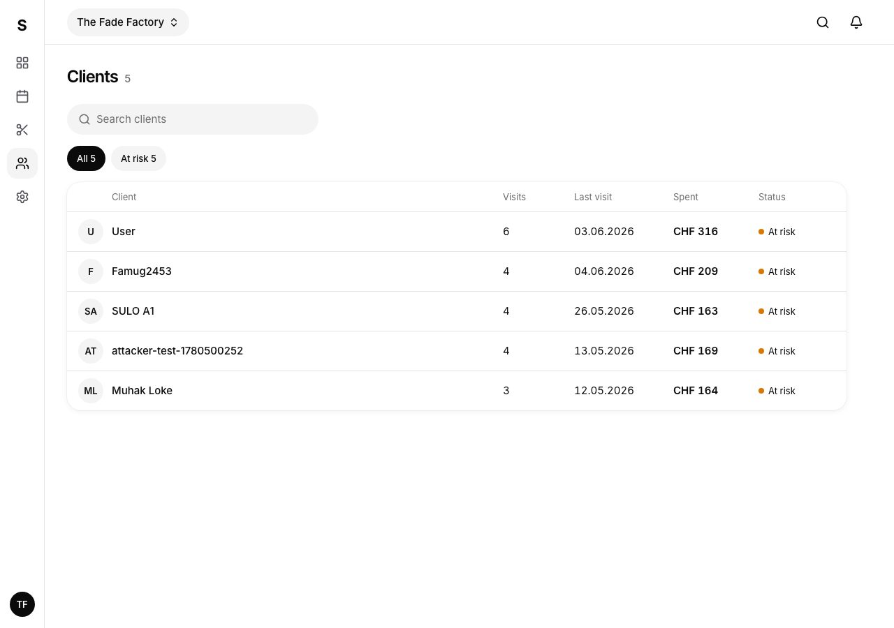
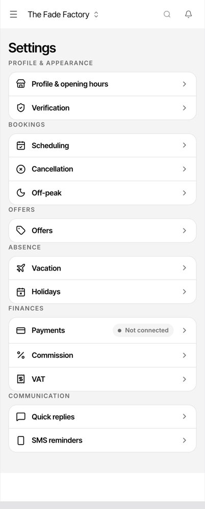
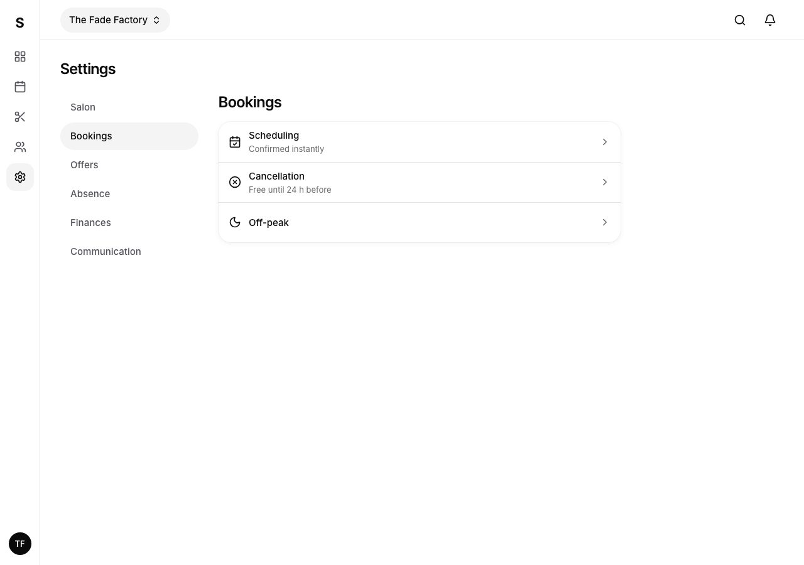

Dashboard: 4 pages redone
Designed from your reference set only, with none of the earlier dashboard decisions. Every number and name is The Fade Factory's real data. Its test bookings stop on Sunday 16 August, so that day plays "today". Tap things: rows open, toggles switch, search filters, the chart shows values.
What the references share, and what these pages copy: greys plus one meaning colour, the number as the loudest thing, 4 text sizes, thin lines instead of boxes inside boxes, right-aligned prices, one black button per screen.
Home
Needs attention first (only when something is open), then today's numbers in one strip, today's list, revenue, top services and staff.
Today

New

Services
Blue switches become black. The "Barbershop" tag on every row goes (the group title says it once). Tap a service to edit it in a sheet; on a computer it opens as a side panel.
Today

New

Clients
Coloured avatars become grey, the red "at risk" pill becomes a small dot, and filters with 0 clients are hidden. Tap a client for their numbers.
Today

New

Settings
Group titles sit right on top of their own box, rows are lighter, and each row shows what is set now. On a computer the groups become a side menu.
Today

New

Notes
- Prices: many test bookings stored CHF 0, so amounts use the service's list price.
- Client visits count completed and booked visits; today's page also counts the cancelled one ("User" shows 7, here 6).
- "Average per visit" is worked out from visits and spend; it is not stored.
- Client names like "attacker-test-…" are test accounts in the data, not a design choice.
- "Start from a template" moved from the top of Services to the bottom; it was a full-width box above the list.